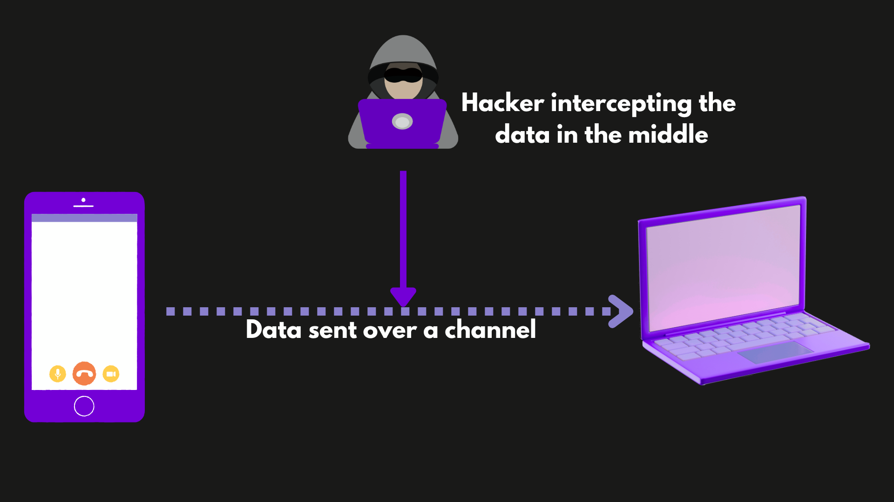
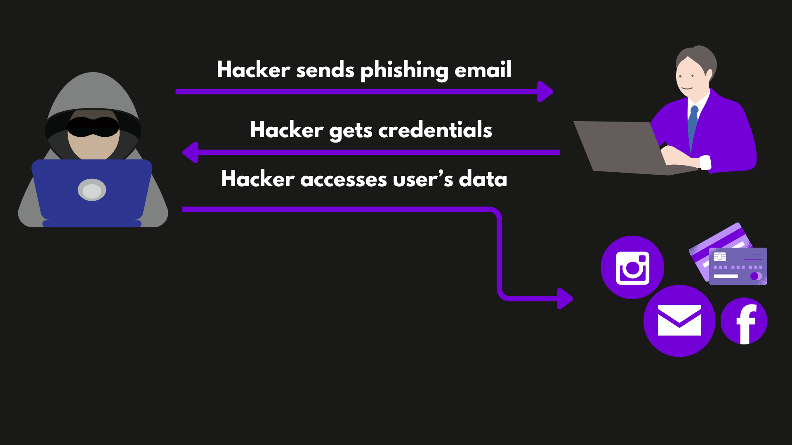
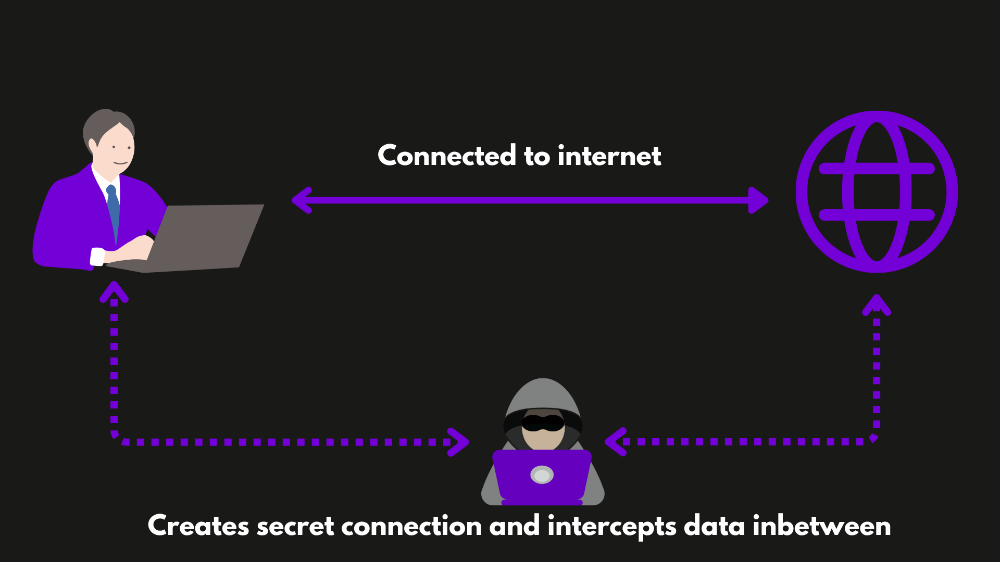
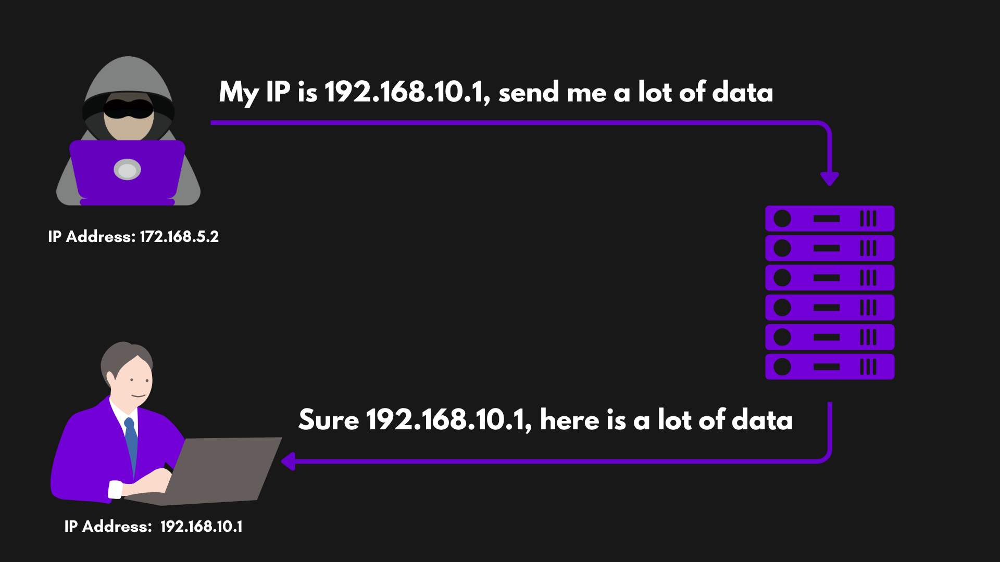
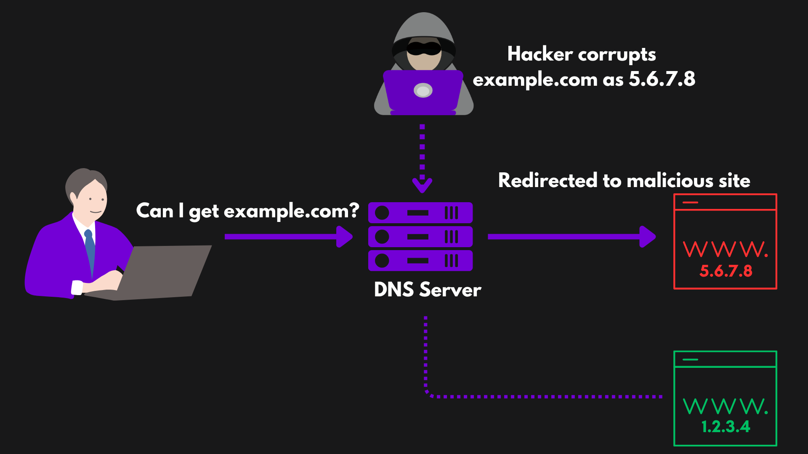
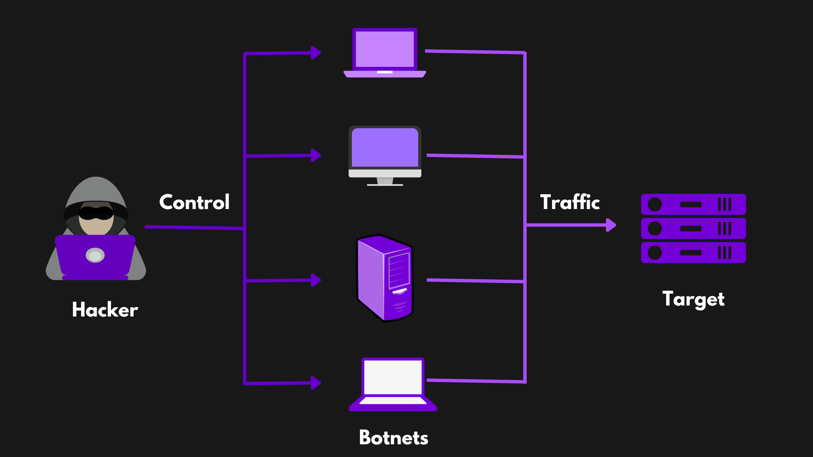
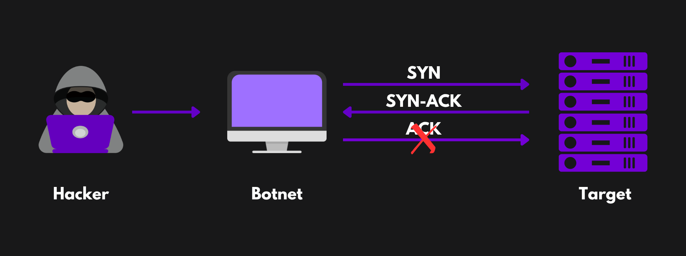
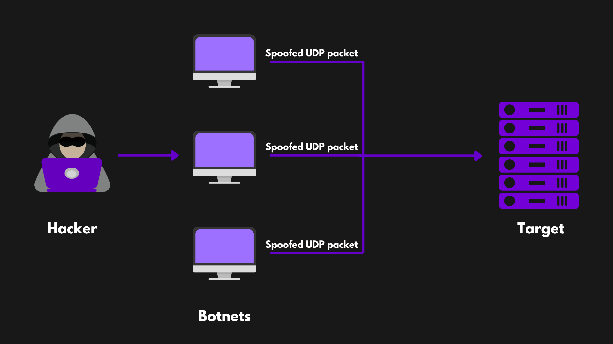
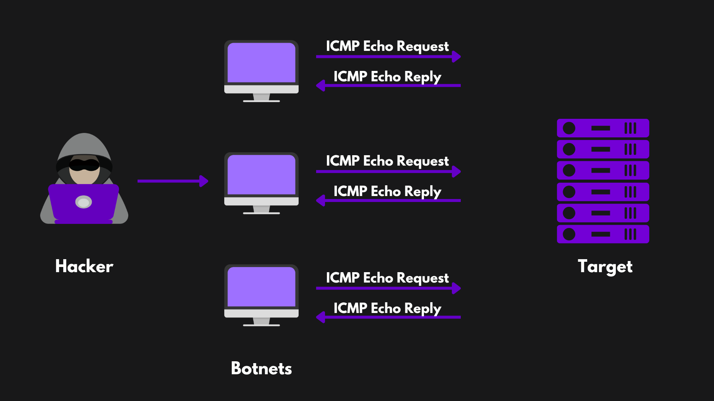
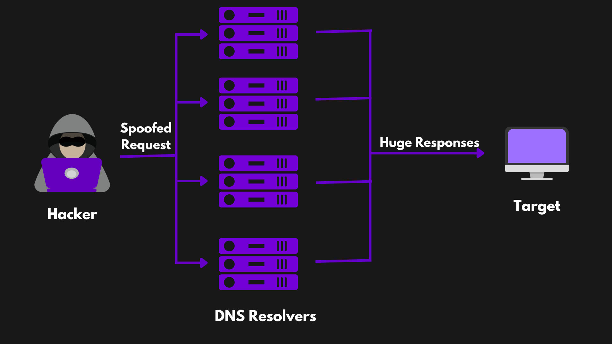

Cyber Threats I

Malware
Malware is malicious software designed to damage or gain unauthorised access to computer systems or networks. It aims to steal information or damage the system. Malware can be spread through infected downloads, compromised websites, or malicious email attachments
Malwares typically infect a system in two ways:
- System vulnerabilities: The vulnerabilities in hardware or software of the system is exploited and malware is injected into the system.
- Social Engineering: Attackers convince or socially manipulate users to download infected software, connect infected drives, reveal credentials, etc. to get access to the system and inject malware.
Various types of malware
- Virus: Viruses are the malicious program that gets attached to legitimate files in our computer. When these files are executed, they spread to other files. Virus requires human interaction, like executing a file. Example, when a virus is attached to a MS Excel Sheet, the virus will spread only when the sheet is opened.
- Worm: Worm is similar to virus but it is self-replicating. It means unlike viruses it can spread itself without user interaction.
- Trojan: Trojan or Trojan Horses are like a silent killer. They hide themselves, often disguising as a legitimate and harmless file and do the damage. Trojans generally create a backdoor to allow other malwares to infect and run.
- Ransomware: Ransomware encrypts data and files in the computer and instructs the user to send the attackers money or any other form of ransom to recover the information. The attackers threaten to misuse the information if they are not paid the ransom.
- Spyware: Spyware are the malwares that secretly monitors user activities in the computer and collects data. They track keystrokes (the keys user type), capture screenshots and monitor internet activity without the user's knowledge. They operate silently in the background and send data to the attacker.
- Adware: Adwares display unwanted popup ads to the user screen. It is not very harmful but is annoying.
- Keyloggers: Keyloggers are the software that can record keystrokes. It allows an attacker to monitor the keys user type and get information such as sensitive credentials.
How to protect against malware
- Install and update antivirus software regularly.
- Avoid downloading files from unknown sources.
- Keep your operating system and applications up to date with security patches.
- Frequently backup files.
Rootkits
Rootkits are the malware that can grant unauthorized access to a system. They are hard to detect. They allow hackers to gain admin-level (root) access and stay persistent in a system. They operate deep in the operating system (kernel) and thus they can evade detection and escalate access privilege.
A dropper can be used to install rootkit into a system. A dropper is a malicious software that checks few things such as:
- Whether a rootkit already exists in a system.
- Whether the system is operating inside a virtual machine.
- The country in which it is operating.
When the system is satisfied as a legitimate and available target, the dropper inserts the rootkit into the system. The rootkit starts running when the system boots.
A rootkit is not a virus and doesn’t exploit vulnerabilities. A rootkit is designed to bypass the Intrusion Detection System (IDS) by hiding in the Operating System kernel. IDS are the security applications that detect malicious activities in the system and alerts the user.
Man-in-the-Middle attack
In these types of attacks, cybercriminals intercept communication between two parties or devices to steal sensitive information, such as login credentials, personal data, or internet activity. The attacker becomes a man in the middle of the channel when data is transferred and they can intercept the information. This type of attack often occurs on insecure public Wi-Fi networks.

There are different types of Man-in-the-Middle attacks.
Email Hijacking
Email Hijacking is the cyberattack where the attacker takes unauthorized access to your email account. They get your credentials via a phishing attack. They can access your account with those passwords. If you use the same passwords across multiple platforms and don't use Multifactor Authentication, then you are more likely to be affected with this attack.

WiFi Eavesdropping
When connected over an unsecured WiFi, the attacker can intercept the information transmitting between your device and and the internet. This is called WiFi Eavesdropping. The attacker can monitor your internet activities and get private information.

IP Spoofing
Every device has an IP address which is the virtual location of the device on the internet. In IP Spoofing, the attacker mimics your IP address to send data (requests) to a web server. The web server assumes that the requests came from your computer and then sends back responses to your computer. This technique is useful for DoS attacks.

DNS Spoofing
When you type www.google.com, there is a DNS server that translates this domain name into ip address 8.8.8.8 which gets sent to the internet. In DNS spoofing, the attacker can sit in the middle of your computer and the DNS server or they can corrupt the records in the DNS server, and when you type the domain name of a website, they can intercept and redirect you to a fake malicious site.

Session Hijacking
When you log in to a site, you may be asked to accept cookies. Cookies store your session ID. For example, if an attacker steals your cookie for facebook, then he can access your facebook account without needing username or password. This is called Session Hijacking. The attacker can get Session ID or cookies by capturing them when you are on an unsecure public WiFi.
How to protect against Man-in-the-middle attack
- Avoid using public Wi-Fi for sensitive transactions, like online banking.
- Use a Virtual Private Network (VPN) to encrypt your internet traffic.
- Always ensure the website you're visiting uses HTTPS://, indicated by a padlock icon.
Denial of Service (DoS) attack
In a DoS attack, the attacker overwhelms a server, website, or network with traffic, causing it to crash and become unavailable. This can disrupt services for businesses and individuals, making it impossible to access the internet service. When the target is overwhelmed by multiple computers sending traffic, it is called Distributed Denial of Service (DDoS) attack and the computers are called botnets. Botnets refer to the collection of computers which have been infected by malware, allowing attackers to remotely control them. The affected computers are also called zombie computers.

There are various types of DDoS attacks.
SYN Flood
When establishing a TCP connection with a server, there is a three-way handshake in the process. Your computer sends a TCP/SYN packet requesting for establishing a connection. The server replies with a SYN-ACK message telling that it is ready for the connection and then your computer sends an TCP/ACK packet to establish the connection. In the SYN Flood attack, the host sends a lot of TCP/SYN packets and the server replies with a SYN-ACK message. But, the host fails to send a TCP/ACK message which would have established the connection and this would leave a half-open connection, consuming processing and bandwidth of the server.

UDP Flood
In a UDP Flood attack, a large number of UDP packets are sent to the target in order to overwhelm it. These packets are sent on random ports on the target. The target would check for each port to see running applications on those ports. If it doesn’t find any, it would send back ICMP “Destination Unreachable” packets. This process uses a lot of bandwidth and processing.

ICMP Flood
In an ICMP Flood attack, the attacker sends a large number of ICMP Echo requests (ping) to the target. The target tries to reply to those requests but this consumes so much processing and bandwidth that the target crashes.

DNS Amplification
In a DNS Amplification attack, the attacker mimics the IP address of the victim computer. Then, it sends a DNS request (which would get a large response) to an open DNS server. The server sends those requests to the victim computer whose IP address was mimicked by the attacker and the victim computer is overwhelmed with the large number of packets it receives.

How to protect against Denial of Service attack
- Use a Web Application Firewall (WAF) to filter and monitor incoming traffic.
- Use load balancers or Content Delivery Networks (CDN) which share traffic load across servers in different locations.
- Implement DoS defence system or develop DoS response plan.
- Monitor network and computer system.
In today’s connected world, cyber threats are inevitable. However, by practicing security measures, we can significantly reduce the risks and protect ourselves from becoming a victim of cyberattacks. We should be proactive and keep us up to date with the vulnerabilities we are exposed to.